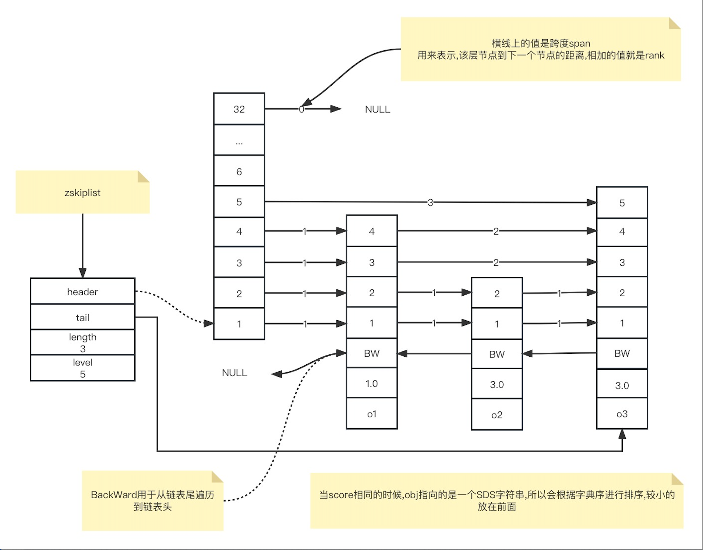

有序集合为何能同时支持点查询和范围查询
有序集合为何能同时支持点查询和范围查询
有序集合(Sorted Set)是Redis中一种重要的数据类型,它本身是集合类型,同时可以支持集合中元素带有权重,并按照权重进行排序。
而我们知道SortedSet中的两个方法
- ZRANGEBYSCORE: 按照元素权重返回一个范围内的元素
- ZSCORE: 返回某个元素的权重值
为什么这两个方法的时间复杂度一个为O(logN) + M 和 O(1)呢?
因为有序集合底层设计采用了两种数据结构,一种是大家都知道的SkipList(跳跃链表)另外一种就是HashMap(Hash表)
注意:
Redis对同一种数据结构会使用多种编码进行表示,当满足以下条件的时候,使用的是压缩链表代替了跳跃链表。
1 | #define REDIS_ZSET_MAX_ZIPLIST_ENTRIES 128 // 有序集合保存的元素数量小于等于128 |
跳跃表的设计与实现
例图
**跳跃链表是一种多层有序链表,**我们把跳表的层次从低到高称为Level1,Level2,Level3…..
如下图所示是一个简单的5层跳跃链表结构
跳表数据结构
节点数据结构
1 | typedef struct zskiplistNode { |
因为SortedSet既要保存元素,也要保存数据权重,所以对应到跳表结点的结构定义中,就对应了sds类型的变量ele,以及double类型的变量score。此外,为了便于从跳表尾进行倒序查找,每个跳表还保留了一个后向指针(*backward)。
因为跳表是一个多层的有序链表,每一层也是由多个节点通过指针连接起来的。因此在跳表结点的结构定义中,还包含了一个zskiplistLevel结构的level数组。
level数组中的每一个元素对应了一个zskiplistLevel结构体,也对应了跳表的一层。而zskiplistLevel结构体定义了一个前向指针,这就使得节点可以在某一层上和后续节点连接起来。同时还定义了span跨度,这是记录节点在某一层上的*forward指针和该指针指向的结点之间,跨越了几个节点。
因为跳表中的节点都是按序排列的,所以,对于跳表中的某个节点,我们可以把从头结点到该节点的查询路径上,各个节点在所查询层次上*forward指针跨度,做一个累加。这个累加值就可以用来计算该节点在整个跳跃表中的顺序。
跳表数据结构
1 | typedef struct zskiplist { |
跳表结点查询
当查询一个节点的时候,跳表会先从头节点的最高层开始,查找下一个节点。
1: 当查找到的节保存的元素权重,比要查找的元素权重小的时候,跳表会再检查该层上的下一个节点
2: 等于要查找的元素权重,会再检查该节点保存的SDS(动态字符串)类型数据,是否比要查找的SDS数据小。如果节点数据小于要查找的数据,会访问该层上的下一个节点。
当上述都不满足的时候,跳表会使用当前节点的Level数组的下一层进行查找。
跳表结点层数设置
有了level数组之后,一个跳表结点可以在多层上访问到了。而一个结点的level数组的层数也决定了,该节点可以在第几层访问到
当我们要决定节点层数的时候,实际上是要决定Level数组具体有几层。
第一种设计方法是:
让每一层上的节点数约是下一层上节点数的一半,比如第1层上是7层,那么下一层第二层只有3个节点。
这样设计的好处是,当跳表从最高层开始进行查找时,由于每一层节点数都是下一层的一半,这种查找类似于二分查找,查找复杂度可以降低到 O(logN)
这样设计的坏处就是,为了维持下一层是上一层的1/2,如果我们有新的元素插入的时候,破坏了这个结构,后续的层数都会有变动,额外开销比较大。
第二种设计方法是:
随机生成每层的节点数。此时,新插入节点,只需要修改前后指针,而不用去修改其他节点层数。
Redis源码中,节点层数是由zslRandomLevel 函数决定。zslRandomLevel函数会把层数初始化为1,这也是节点的最小层数。然后该函数生成随机数,如果随机数的值小于ZSKIPLIST_P(指跳表结点增加层数的概率，值为 0.25),那么层数就增加一层。因为随机数取值到[0,0.25) 范围内的概率不超过 25%,所以也就表明了,每增加一层的概率不超过25%。
1 |
|
跳跃表和哈希表的组合使用
当创建一个ZSET的时候,代码中会相继调用dictCreate函数创建zset中的哈希表,以及调用zslCreate 函数创建跳表,如下所示。
1 | zs = zmalloc(sizeof(*zs)); |
简单来说,我们在把数据插入到跳表以后,也要把数据插入哈希表(Key为member Value为score)。
当往ZSET插入数据的时候,zsetAdd函数就会被调用
1: 首先会去判定当前使用的编码,是跳跃链表还是压缩链表
我们主要关注跳跃链表的插入
zsetAdd函数会先使用哈希表的dictFind函数,查找要插入的元素是否存在。如果不存在,就直接调用跳表插入函数zslInsert和哈希表的插入函数dictAdd
2: 如果zsetAdd函数通过dictFind发现要插入的元素已经存在了,那么zsetAdd函数会判断是否要增加元素权重
如果权重值发生了变化,zsetAdd就会调用zslUpdateScore函数,更新跳表中的元素权重值。紧接着，zsetAdd 函数会把哈希表中该元素（对应哈希表中的 key）的 value 指向跳表结点中的权重值，这样一来，哈希表中元素的权重值就可以保持最新值了。
1 |
|
关于ZSET为什么使用跳跃表还不是使用平衡二叉树实现
1: skipList更省内存: 25%的概率增加随机层数,用过计算skipList平均每个节点的指针数是1.33个,平衡二叉树每个节点有两个指针更不用说B+树这种多叉树了
2: 遍历更加友好,本质是一个多层链表,向后遍历链表即可。而平衡树需要使用中序遍历来进行遍历,实现比较复杂。
3: skipList容易实现和维护。平衡树维护比较困难。